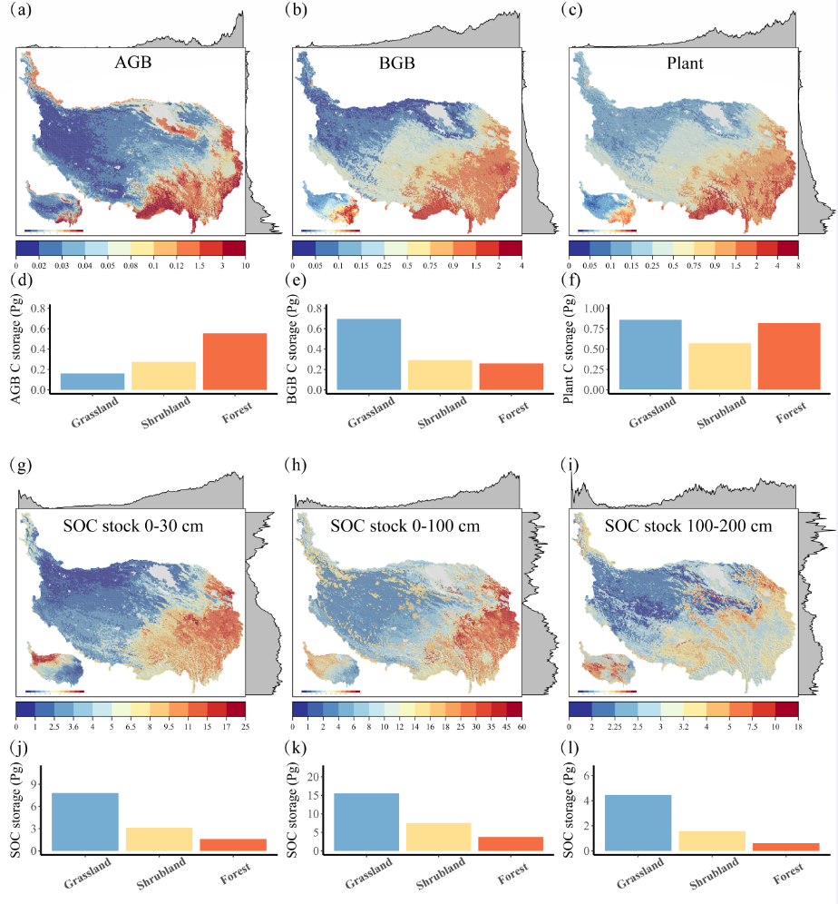
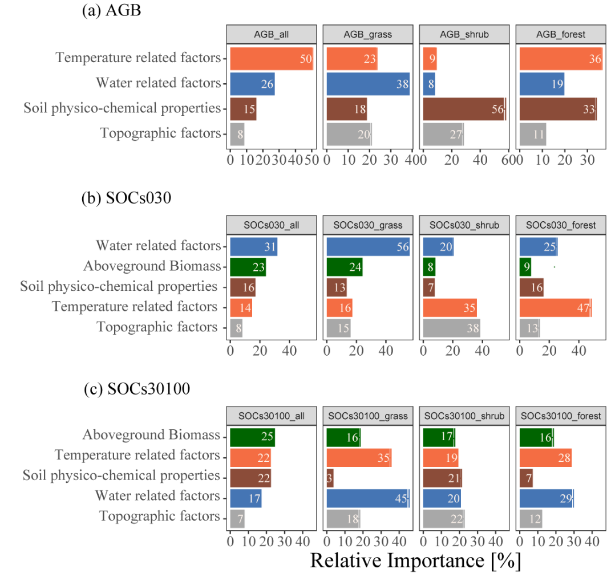

Main results

Fig.1 sampling sites

Fig. 2 SOC distribution and C stocks under three main ecosystems on the Tibetan Plateau

Fig. 3 Relative importance of driving facotrs
The Qinghai-Tibetan Plateau (TP) accumulated a large amount of organic carbon, while its size and response to environmental factors for the whole area remain uncertain. Here, we synthesized a dataset to date with the largest data volume and broadest geographic coverage over the TP, composing of 7196 observations from multiple field campaigns since the 1980s, and provided a comprehensive assessment of the size and spatial distribution of carbon pools for both plant and soils on the TP using machine learning algorithms. The estimated soil organic carbon (SOC) storage to 1m depth was 32.01 Pg (11.72 kg \[m^{-2}\] on average)… more
Fig.1 sampling sites
Fig. 2 SOC distribution and C stocks under three main ecosystems on the Tibetan Plateau
Fig. 3 Relative importance of driving facotrs
Predictive soil mapping is not new, and the machine learning algorithms are also not difficult. There are three things that are important:
data wrangling before put it into the machine learning black box.
choose proper packages that used for mapping, which cost a lot of time. There are plenty of package corresponding to varied algorithms. As R is not that fast for large data processing, we could choose packages built by other low-level languages, i.e C++, java etc. to improve mapping speed. Here we use ‘ranger’ for random forest and ‘xgboost’ for gradient boost.
although machine learning algorithms normally has not strict data distribution request (like normal), it is better to do some pre-test on these data, and their relationship with multiple environmental factors. We conducted a log-transform for the raw data, which envently showed a better predictive performance.